Accounting for employment (payroll).
Keywords: Accounting for employment (payroll).
Beigesoft™ EIS uses the tax table percentage method (withholding tax tables) for automatically calculating wage taxes.
It calculates wage tax = tax rate (according to tables) * (gross wage - all allowances per payment). This simple method is used in the USA. Other countries use a little bit more complex method allowances per year, which this application can't make automatically yet.
Bob hired Rob Swallow as a cook. He filled out "Employee category", "Employee" and "Wage Types" for Rob:
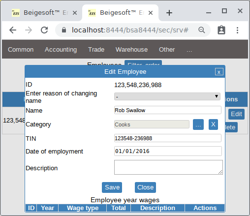
* use a TIN (SSN) or a phone number for an employee ID. At least, use IDs that have the same number of digits, e.g. 6 digits IDs from 100000 to 999999. This is important because of using such parent ID for its automatic lines (year wage), e.g. an employee with ID 100000 has two lines of year's wage with IDs 1000001 and 1000002.
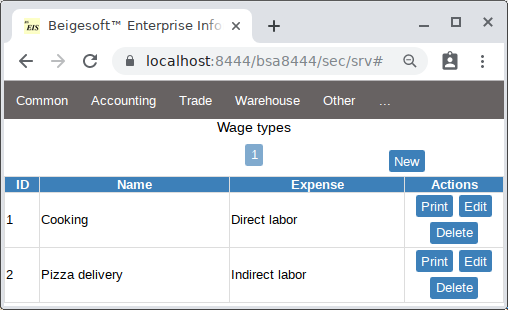
Bob uses IRS Publication 15 (IRS-ETG) for accounting employment federal taxes, and NYS New York State Withholding Tax for state ones. So he filled out the "wage tax tables".
1. Federal Income Tax from employee wage. Rob filled form W-4 and got two withholding allowances. Bob elected the percentage method, so according to the Table 5 (page 42 of IRS-ETG) the daily allowance is 15.6 * 2 = 31.2. Bob should use the table 8 (page 45 of IRS-ETG) to withhold the Federal Income tax, so he filled "Menu - Other - Wage tax table" accordingly:
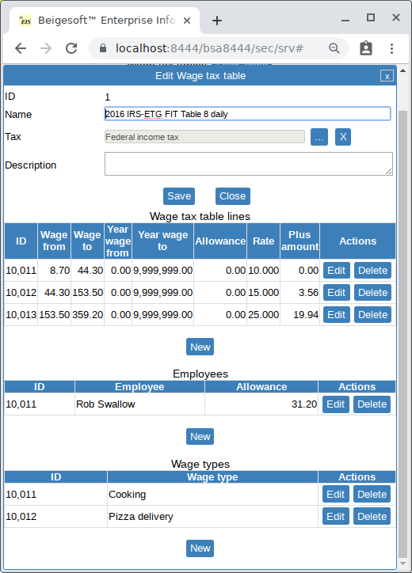
* any tax table line requires entering manually ID, so use this simple formula:
1000 + TAX TABLE ID append LINE INDEX, e.g. here first line should be 1000 + 1 append 1 = 10011, and second = 10012 end so on.Here 1000 gives you ability to have up to 8999 different tax tables with ID from 1-8999 without their lines ID collisions. First and 123 line's ID of TT:
TT ID LINE#1 ID LINE#123 ID 1 10011 1001123 199 11991 1199123 1100 21001 2100123 5155 61551 6155123 8999 99991 9999123* as you can see different entities, e.g. lines of different types in this case, can have the same ID.
2. Medicare Tax from employee wage. According to IRS-ETG its rate is 1.45%, so he has filled new "Wage tax table":
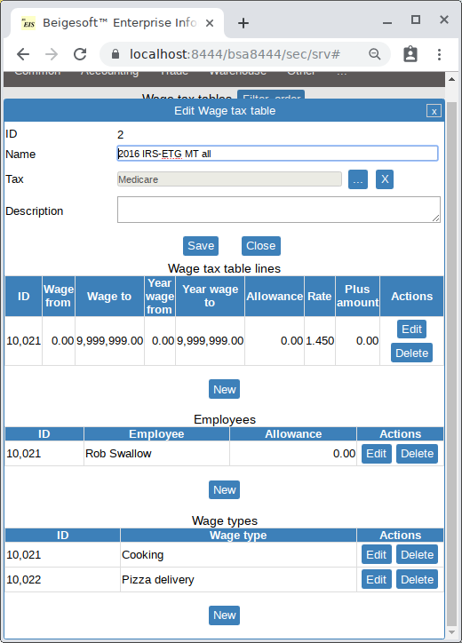
3. Social Security Tax from employee wage. According to IRS-ETG its rate is 6.2% with year wage limit 118500 USD, he has filled new "Wage tax table" for the SST:
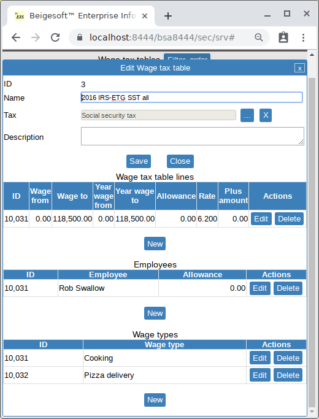
4. Federal Unemployment Tax from EMPLOYER. According to IRS-ETG its rate is 6% with year wage limit 7000 USD, so he has filled "Wage tax table" for the FUTA:
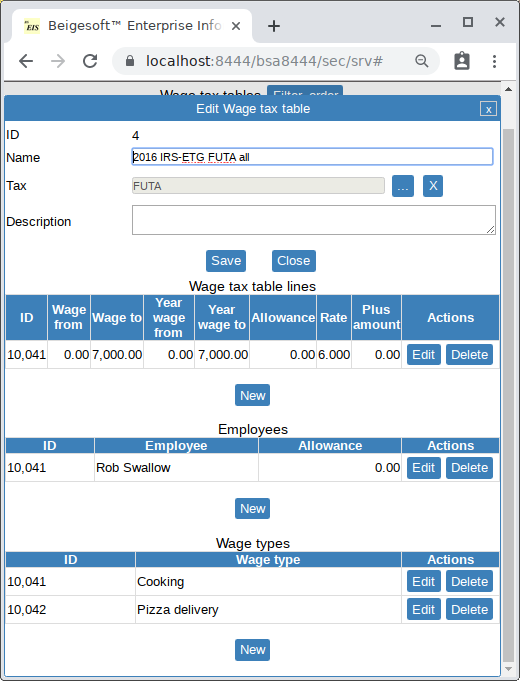
* make sure that you set the tax type properly (from employee or employer).
5. New York Income Tax from employee wage. According to NYS New York State Withholding Tax Rob's two allowances (by form W-4) give him a daily allowance 36.15 (Table-A on page 14). Bob uses the table II-E (page 17) to figure the NY Income tax, so he has filled new "Wage tax table" for the NYIT accordingly:
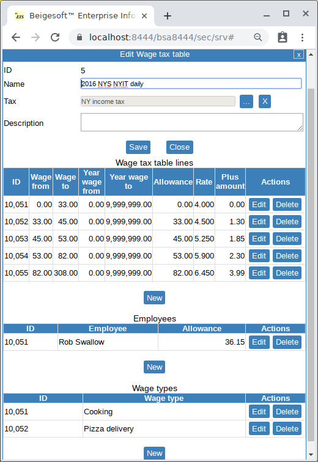
Rob made on Jan 17 12 Pizza with bacon Frozen and 12 Pizza with cheese Frozen, then he delivered them to the customers. Bob filled the Wage document for 60 USD gross for cooking and 20 USD for delivering. He set the "tax account expense" to 5105 Expenses, then pressed save, then added new wage line for cooking (account Inventory direct cost temporary for direct labor cost), and another line for delivering (5105 Expenses for indirect labor cost):
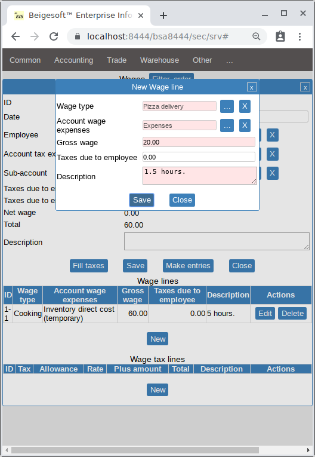
then he pressed the fill taxes button, then posted the document:
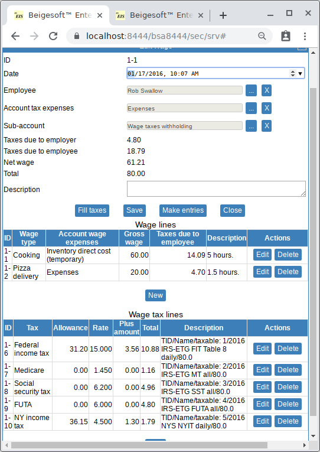
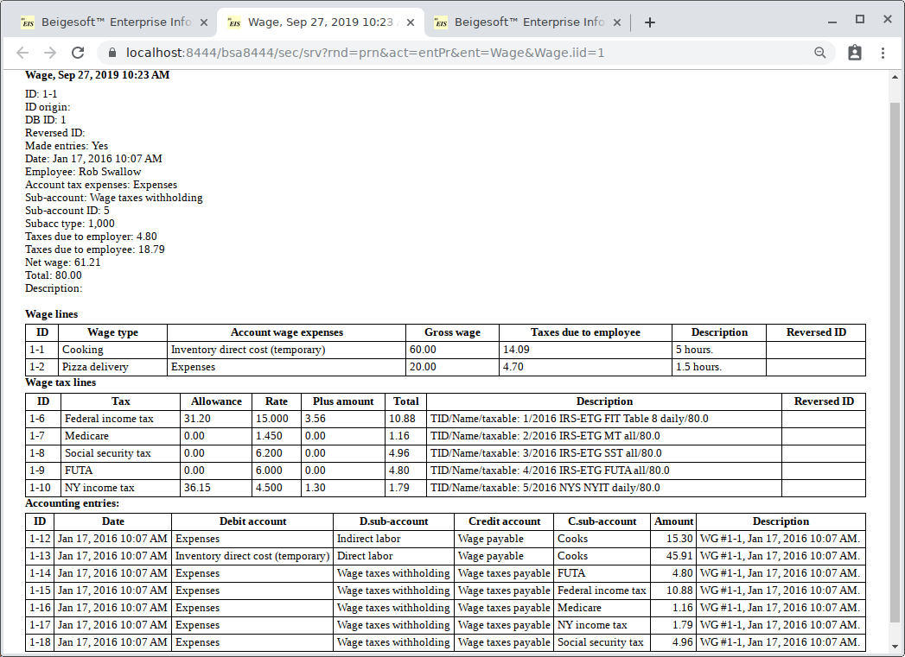
As you can see, the cooking (direct labor) wage is posted separately from the delivering (indirect labor) one. For manufacturing, a direct labor cost (as well as cost of materials) is usually included into the cost of the final product. Make sure that it's true for your tax rules.
I guess that you noticed that Bob made a mistake, he forgot about the NY unemployment tax (NY SUTA requirements and limit NY SUTA rate NY SUTA instructions.). So you should make sure that you made all things properly according to the law of your country. Tax authorities provide full information with examples on its Internet site. You should study it thoroughly, when you have a question, then call your tax authority. Otherwise if you made a mistake, then you will get a penalty, e.g. if you deduct your income tax with a wrong cost of goods sold (the deducting expenses is greater than you can prove). You have to make (and keep) records that show these proper calculations according to IRS 583 Starting a business, page 12. Beigesoft™ EIS respects this, in addition it makes many records automatically (COGS, employment taxes, sales taxes, etc.) and reports to prove your business expenses.
The trial balance after that is:
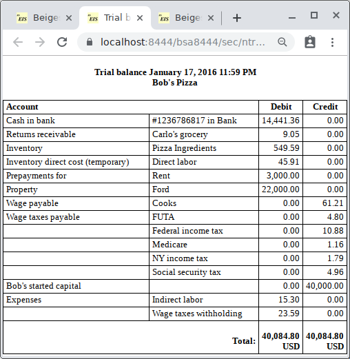
Allowance per year.
To use the more complex method allowances per year don't fill allowances in the tax tables. Fill the taxes automatically, then change the allowances in the wage tax lines and the taxes in the wage lines by hand. For example Jim Gold got 2000 EUR allowances per year for Income tax 12%. He is paid 1500 EUR per month, so the tax lines will be:
- 1st month - 1500 EUR of the allowance is used (the rest is 500) - no tax
- 2nd month - 500 EUR of the allowance is used (the rest is 0) - the tax = (1500-500)*0.12
- 3d, 4th ... months - the allowance is 0, so the tax = 1500*0.12